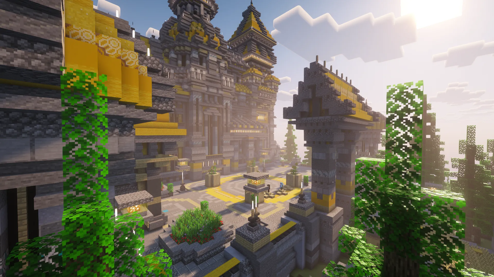
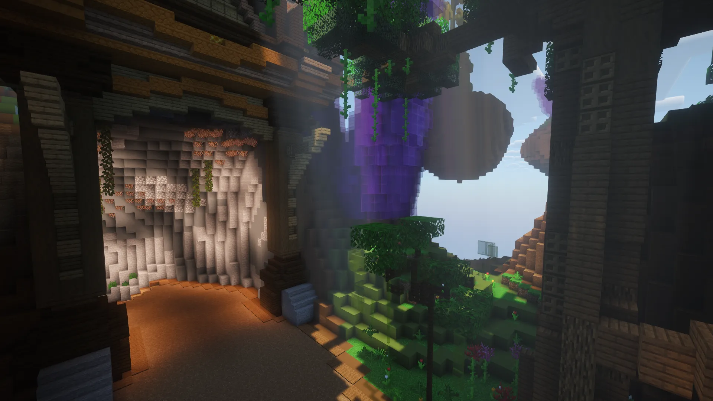

A FrostVerse 2025-ben nyitott, azzal a céllal hogy minőségi és értékes játékélményt biztosítson mindenkinek. Kiemelkedő figyelmet fektetünk a barátságos, összetartó közösségre.
Azt valljuk, hogy egy jó közösségben nem csak időtöltés a játék, hanem érték. Érték, melyre évekkel később is szívesen emlékszünk vissza.